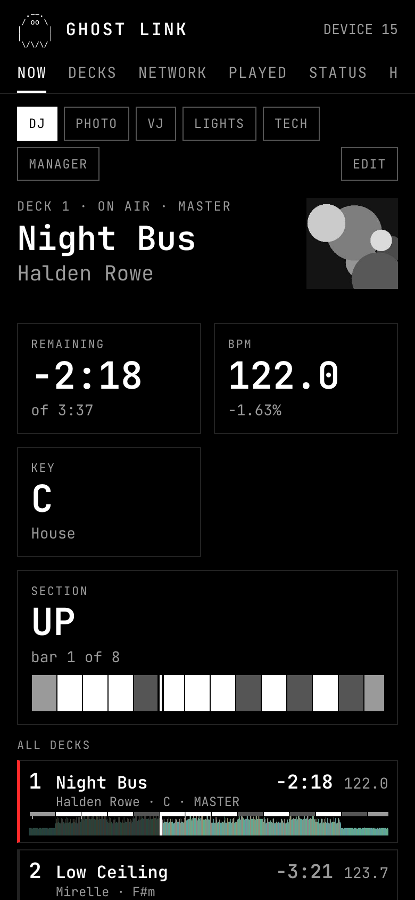
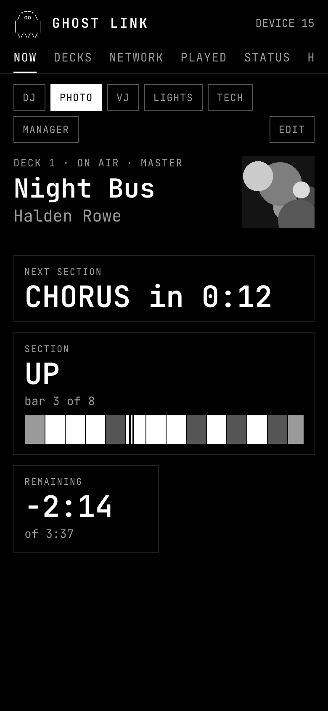
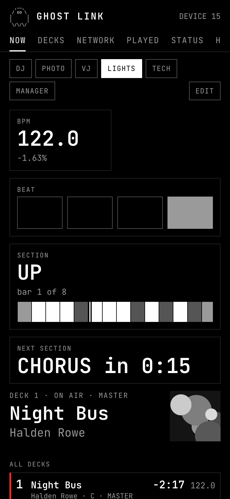
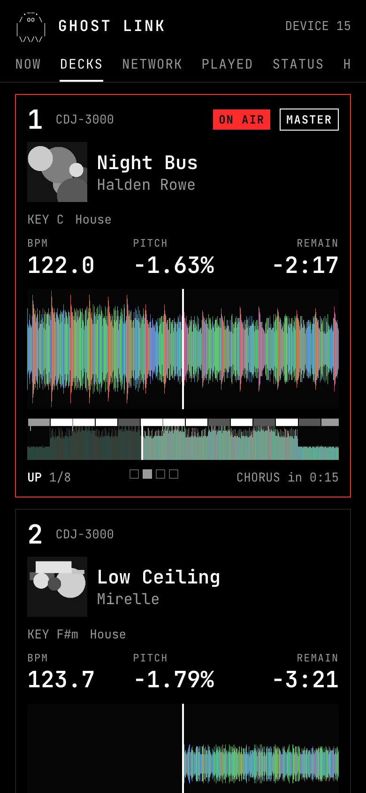
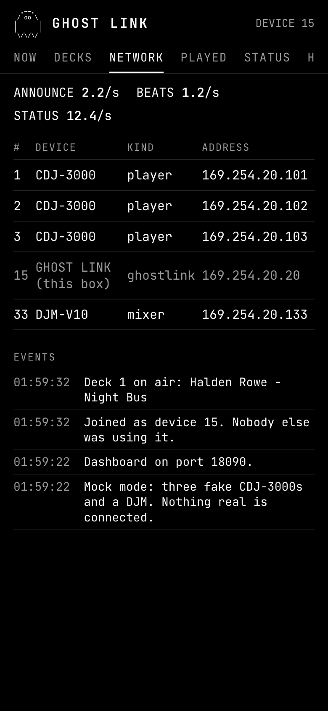
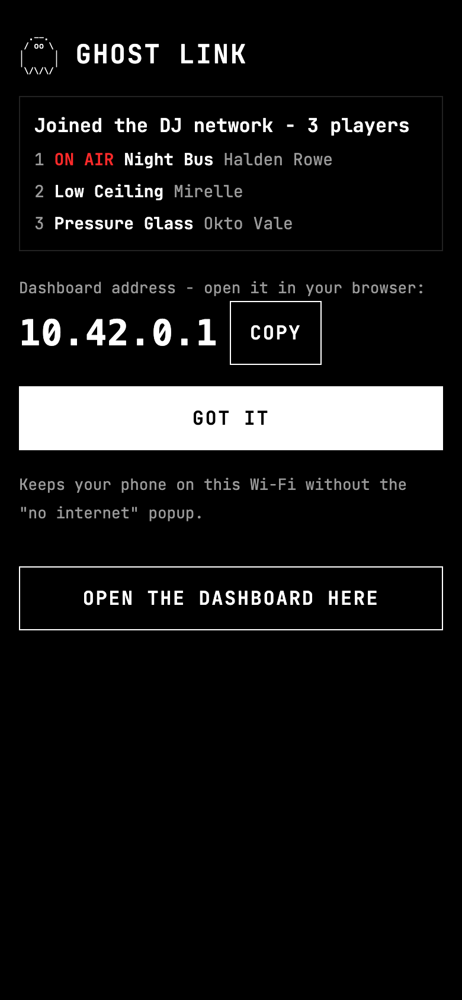

IT ONLY LISTENS
It reads what the players say. It never sends a command to a player or mixer.
Every deck, live, on every phone in the room.
A small box for the DJ booth. Plug it into the DJ network and anyone in the room opens what's playing in their phone's browser: track, BPM, time left, waveforms, and when the next chorus hits. No app. It only listens.
TESTING AT BOSTON SHOWS · FALL 2026 · FIRST VENUE BIJOU
ALL DECKS
Who's on air, who's master, how long is left, and what's coming next. Waveforms scroll in time. The beat counter flashes on the beat.
Running in your browser. The box reads the same things off the network, from the players themselves.
WHAT IT SHOWS
It reads the PRO DJ LINK network that CDJs, XDJs and DJM mixers already talk on, and puts it on a page any phone can open.
THE REAL THING
Straight from the box. Black, big type, nothing to learn.






SWIPE FOR MORE →
WHO IT'S FOR
Pick a role on the NOW tab and get a starting layout. Anyone can see everything and rearrange their own screen.
Time left, next section, BPM and key on every deck. Know what the other deck is doing without leaning over.
A countdown to the chorus. Be in position before the drop, not after.
Beat counter, phrase and master BPM. Cut on the one.
Big beat squares, the section you're in and the one that's next.
The network in plain English. Two players on one number, a missing mixer, a pulled USB.
Who's on, what's played, set times, and a recap to post at the end of the night.
HOW IT WORKS
Run a cable from the box to a spare port on the DJ network switch.
Plug in power. The box finds the players and mixer by itself.
On your phone, join GHOST LINK. The dashboard pops up. Share it with the room.
Got venue Wi-Fi? Save it once and the box joins it on the next visit, so everyone stays on their usual network. No known Wi-Fi around, it makes its own. No internet needed either way.
IT WATCHES THE BOOTH
Nobody has to be staring at the decks. If the music is about to stop, everyone holding a phone knows.
SAFETY
A booth is no place for surprises. GHOST LINK is built to be the quietest thing on the network.
It reads what the players say. It never sends a command to a player or mixer.
It joins on a spare number, 7 to 15. If anything else needs that number, it backs off by itself. It never fights.
The system is read-only. Pulling the power can't hurt it. Plug it back in and it comes back up.
Controls are password-locked. Watching is open to anyone on the Wi-Fi. Every night is recorded on the box, so you can replay it later.
FOR VENUES & MANAGERS
Set it up once per room. It runs the night by itself and keeps the paperwork.
Every track that went out, grouped by DJ. Past nights kept. CSV export. A BPM-across-the-night chart.
A recap image of the night, ready to post.
Set who's on the decks. Tracks land under the right name.
Date, venue, lineup with set times. On the night it switches over by itself.
Address, rooms, gear, contacts and the venue Wi-Fi, saved on the box.
Every night is recorded on the box. Go back and see what happened, and when.
FAQ
PRO DJ LINK players and mixers: CDJs, XDJs and DJMs on the DJ network. Tested on an XDJ-XZ and on CDJ-3000s at Bijou.
No. Any phone browser. Join the Wi-Fi and it opens.
No. Everything runs on the box, in the booth.
No. It's read-only. It listens to the network and never sends commands to the players. If anything needs its spot, it steps aside.
Nothing breaks. The system is read-only, so plug it back in and it comes back up.
It's not for sale yet. We're testing at Boston shows through fall 2026. Get on the list and we'll reach out when units are ready.
WAITLIST
Not for sale yet. Tell us who you are and we'll reach out when units are ready.